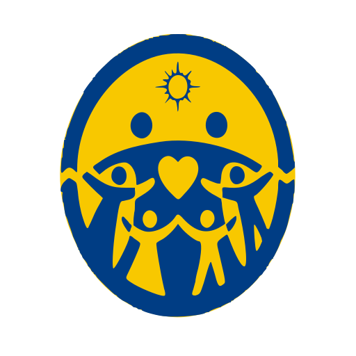

축복과 가정에 관해 궁금한 것을 물어보시면, 공식 문서에서 찾아 어디에 적혀 있는지까지 함께 알려드립니다.
답은 여섯 종 문서 안에서만 나옵니다. 축복 행정 규정집, 축복후보자 등록 안내, 봉헌식 시행 안내, 교류 기간 운영 지침, 40일 정성 준비 안내, 가정관리 실무 편람. 여기에 없는 것은 답하지 않고 사람에게 연결합니다. 계정 정보는 소속 가정 연동에만 씁니다.
한 번에 하나씩 여쭤 주세요. 지난 문답은 아래에 접혀 있습니다.
2026.08.05 오전 10:24
축복후보자 등록에는 서류 3종이 필요합니다. 등록 신청서, 가정부장 확인서, 그리고 최근 6개월 이내 발급된 가정 확인 자료입니다.
등록에 필요한 서류는 신청서와 확인서와 가정 확인 자료 3종으로 정해져 있습니다. 이 가운데 가정부장 확인서는 소속 가정부장님만 발급할 수 있습니다.
가정 확인 자료는 발급일로부터 6개월이 지나면 다시 받아야 합니다.
서류 형식이 지역마다 조금씩 다를 수 있으니, 제출 전에 소속 지역에 한 번 확인하시는 편이 좋습니다. 이 부분은 문서에 적혀 있지 않아 안내로 드립니다.
1등록 신청서를 작성합니다양식은 소속 가정부장님께 요청하시면 받으실 수 있습니다.
2가정부장님 확인 서명을 받습니다본인 확인과 소속 확인이 함께 이뤄집니다.
3지역 축복가정국에 제출합니다제출은 등록 마감일 7일 전까지입니다.
한 군데를 더 맞춰 보고 있습니다. 답은 이미 끝났고, 어느 대목에서 나왔는지 확인하는 중입니다. 보통 15초쯤 걸립니다.
2026.08.05 오후 9:40
마음이 복잡하실 때 규정부터 꺼내면 도움이 되지 않더라고요. 먼저 한 가지만 여쭙겠습니다.
지금 가장 마음에 걸리는 것이 일정 같은 절차 쪽인가요, 아니면 관계 쪽인가요?
답을 정해두지 않아도 괜찮습니다. 편하신 만큼만 말씀해 주세요.
2026.08.05 오후 2:11
제공된 문서에서 이 내용을 찾지 못했습니다.
어디까지 찾아봤는지
여섯 종 190쪽을 찾아봤습니다.
『축복후보자 등록 안내』 8쪽에 소속 지역이 불분명할 때의 처리 절차가 있습니다. 다만 이 조항이 해외 거주자에게 그대로 적용되는지는 문서에 적혀 있지 않습니다.
부모님이나 가정부장님께 이렇게 여쭤 보세요
2026.08.05 오후 11:52
지금 많이 힘드신 것 같아요. 규정 이야기는 잠시 미루겠습니다.
먼저 한 가지만 여쭐게요. 지금 곁에 함께 있는 분이 계신가요?
혼자 계신다면, 지금 바로 이야기 나눌 수 있는 곳이 있습니다.
109
자살예방 상담전화 · 24시간 · 무료
천천히 하셔도 됩니다. 준비되시면 그때 다시 여쭤 주세요.
순서는 정해져 있습니다. 먼저 부모님, 그다음 가정부장님입니다.
공식 문서를 근거로 안내합니다. 개인 사정에 따라 다를 수 있으니 최종 확인은 소속 가정에 문의해 주세요.
축복후보자 등록 안내 6쪽
개정 2025.11.20 · 축복가정국 · 22쪽 · 이전 판 2024.02.15
제7조(제출 서류) 축복후보자 등록에 필요한 서류는 등록 신청서, 가정부장 확인서, 가정 확인 자료 3종으로 한다. 각 서류의 양식은 축복가정국이 정하여 배포한다.
제8조(유효 기간) 가정 확인 자료는 발급일로부터 6개월 이내의 것이어야 한다. 기간이 지난 자료는 새로 발급받아 제출한다.
제9조(대리 제출) 부득이한 사유가 있을 때에는 직계 가족이 대리하여 제출할 수 있다. 이 경우 대리인의 신분을 확인할 수 있는 자료를 함께 제출한다.
등록에 필요한 서류는 신청서와 확인서와 가정 확인 자료 3종으로 정해져 있습니다.